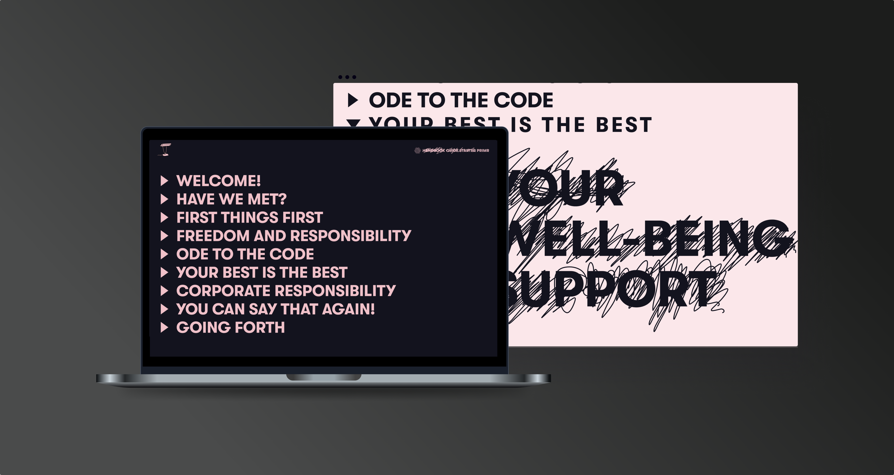
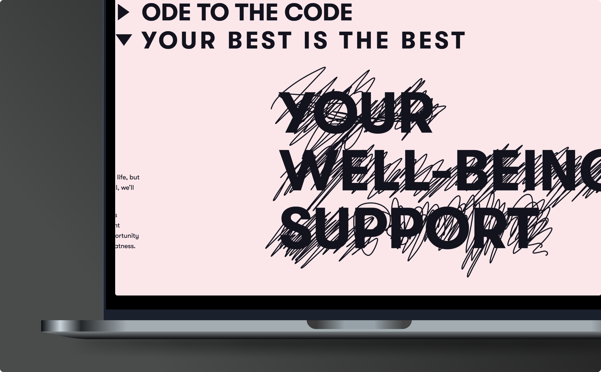
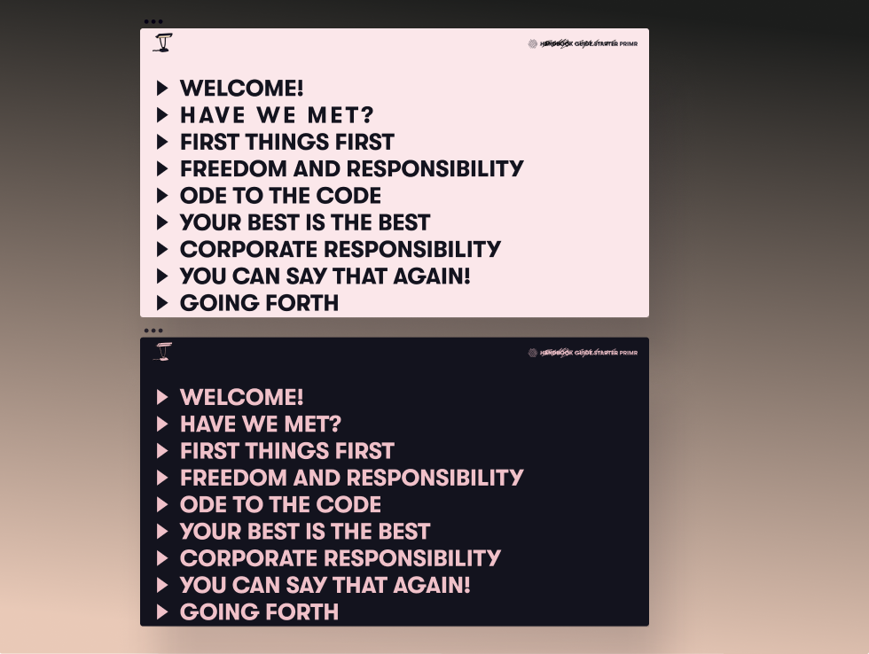
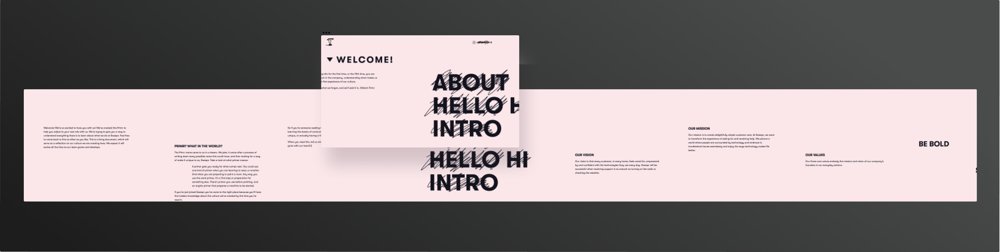
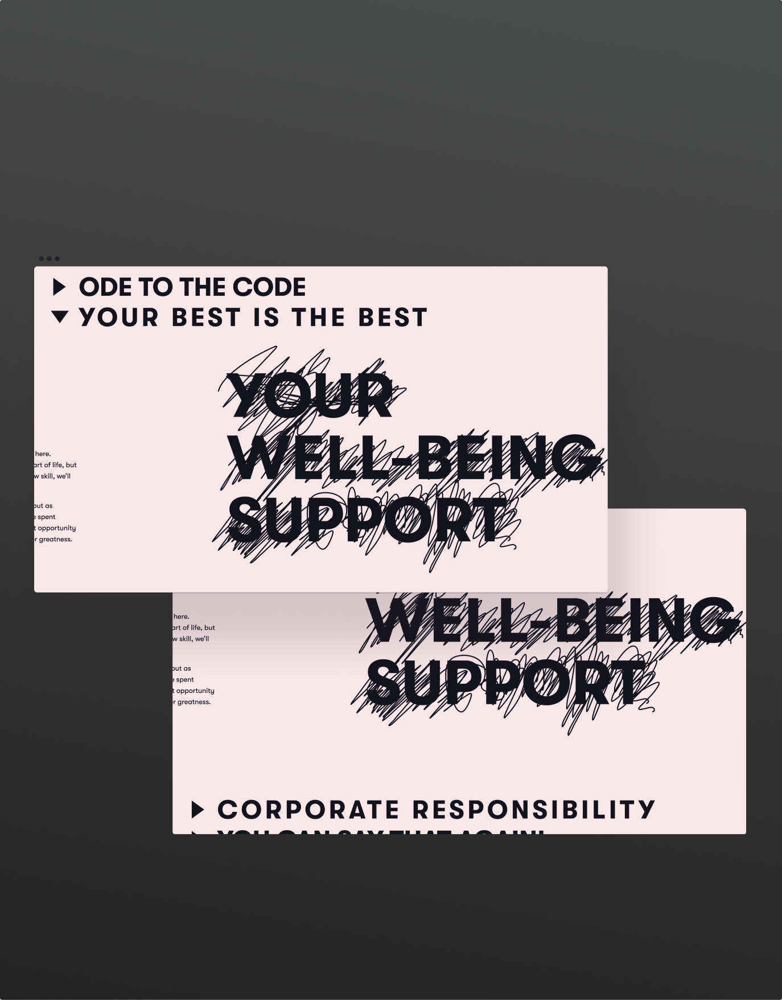
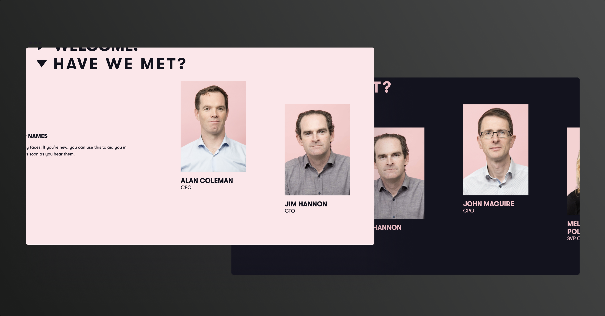
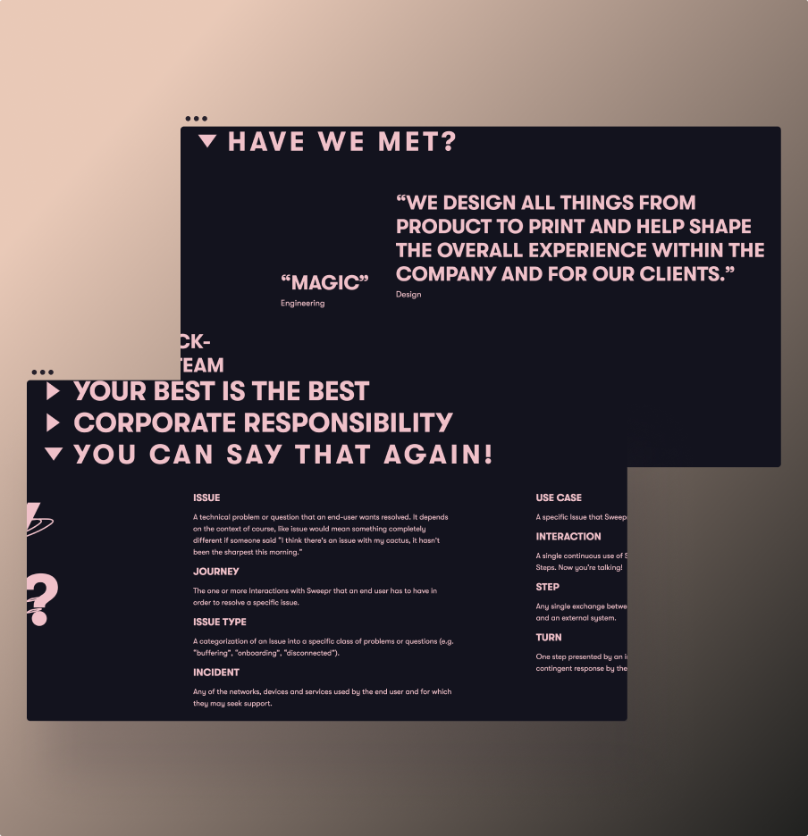

Published
Audience and user
Internal staff at Sweepr, particularly new employees.
Client
Sweepr
Date
September 5th, 2019


The micro site handbook for Sweepr was created as an onboarding resource for new employees, designed to be read top to bottom in a linear format, and make usually boring policies more enjoyable to read. It was also to act as a digital artefact that housed content on the employee experience.
Primr: Sweepr employee handbook
UX design, UI design, Copywriting, Graphic design.

The website is one page and navigation a collapsable list, which helps users read through all the content linearly.

The top bar hosts a button which changes the UI from light mode to dark mode, a delightful feature added in to give the tech companies employees something to be happy about.

The website is one page and navigation a collapsable list, which helps users read through all the content linearly. The top bar hosts a button which changes the UI from light mode to dark mode, a feature added in to give a little delight to techies.

The display typographic treatment was accentuated by an organic pattern and layout of the body copy. This was to communicate the fluidity and ever-changing qualities of the site.

Each employee is introduced with an image and name, so learning names when your beginning a new job seems a little easier.

Some primary research was conducted to find interesting takes on what the company does, and what each individual has to say about their role. This gave an interesting variance in the tone. For a very functional purpose, a list of technical or slang was compiled and displayed, to allow the experience of a newcomer to be a little more inclusive.
